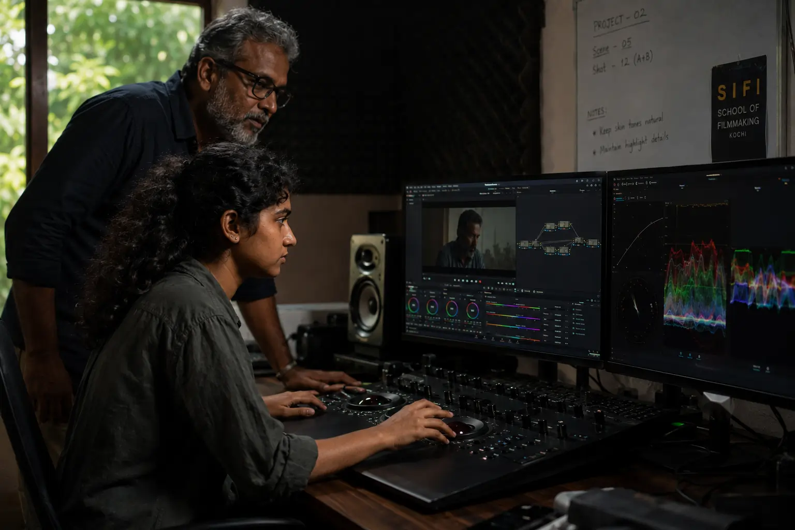
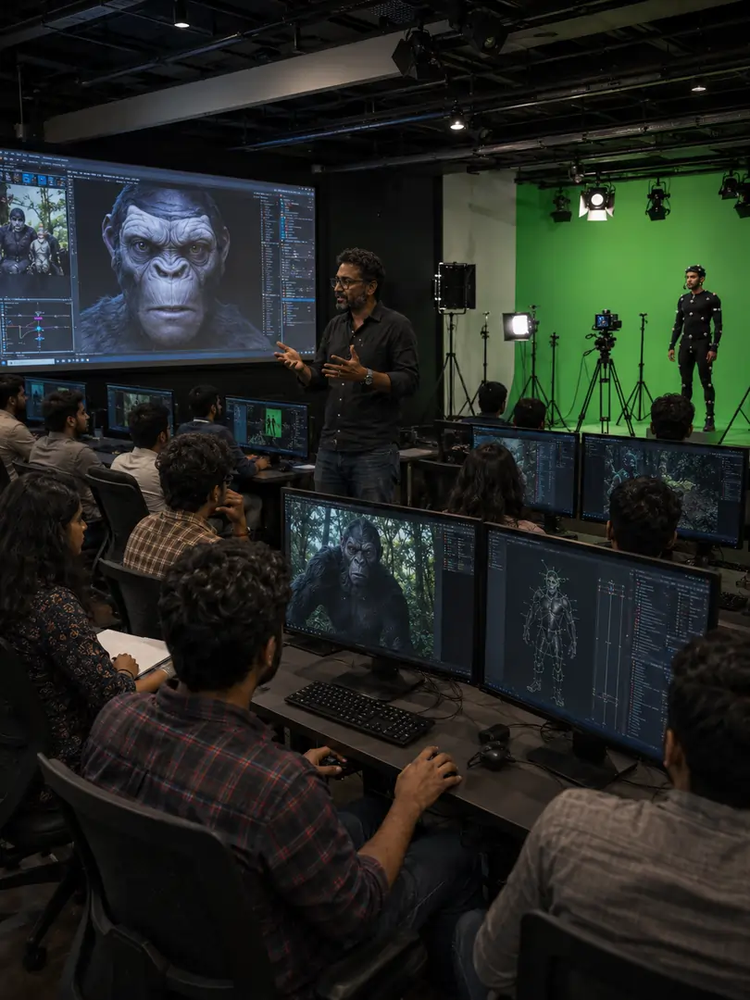
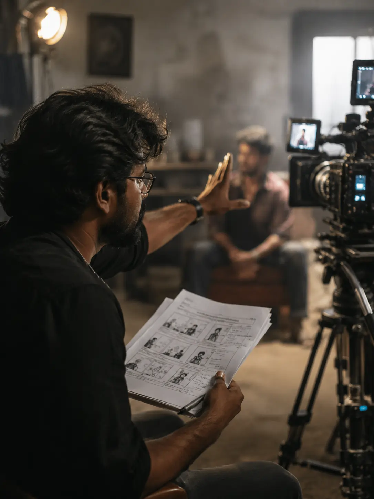
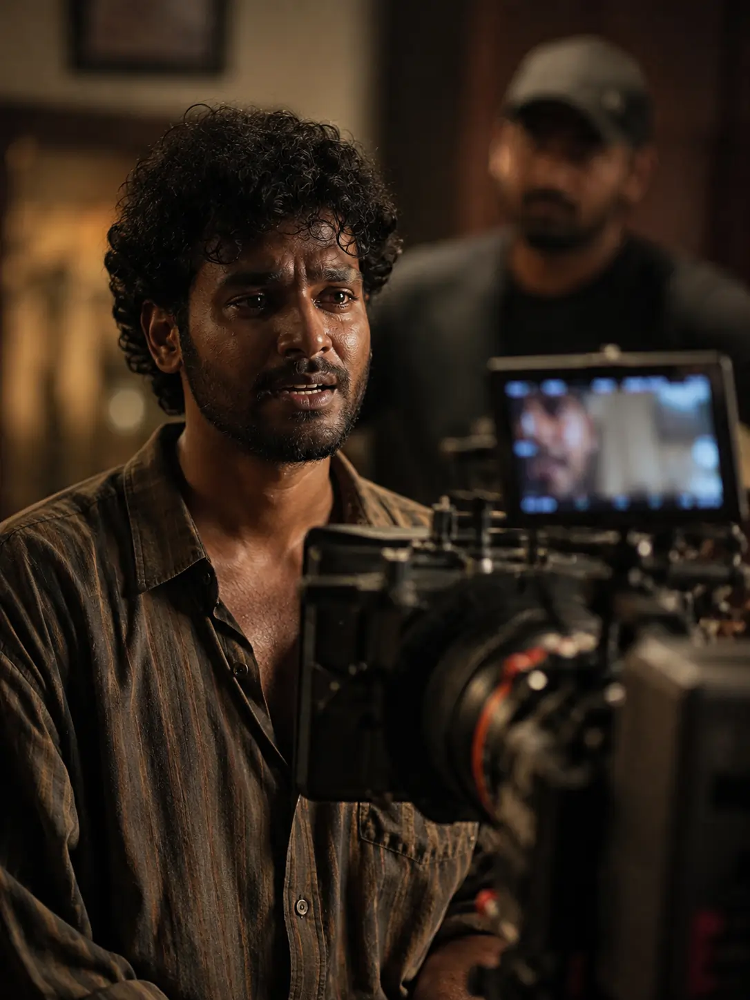

ADMISSIONS FOR 2026 MANAGEMENT QUOTA ARE NOW OPEN. APPLY NOW
Inspired by the legacy of Satyajit Ray, the Satyajit Ray International Film Institute (SIFI) is a leading film institute in Kerala, offering cinema and media education in Wayanad. Our film school combines creative learning, practical filmmaking training, and industry-focused courses to prepare aspiring filmmakers and media professionals.




Set against the breathtaking, cinematic backdrop of Wayanad, the SIFI campus is more than just a place of learning—it is a living studio. Designed to inspire creativity at every turn, our environment blends natural beauty with creative infrastructure, offering the perfect sanctuary for storytellers to master their craft.
EXPLORE CAMPUS →YOUR JOURNEY INTO THE WORLD OF CINEMATIC EXCELLENCE STARTS HERE. APPLICATIONS ARE NOW OPEN FOR ALL BA PROGRAMS. WE SEEK REBELS, VISIONARIES, AND POETS READY TO MASTER THE CRAFT.
Studying at SIFI Wayanad means living cinema every day. Discover our admission pathways, scholarship programs, and campus details.
EXPLORE ADMISSIONS →sifiwayanad@gmail.com
+91 8281520380 / +91 9447203755
Thonichal, P. O Nallurnadu
Mananthavady, Wayanad, 670 645
Kerala, India